Abstract:
- Inverted index
- Query processing
- Pharse Queries
Overview
Boolean model is one of the earliest model in IR, so it is easy to support and easy to optimise. Usually faster, but contains less information than vector model.
- Why we need IR model？ —— disadvantage of “grep”:
- Time complexity O(n), slow for large data
- Other operations not feasible, (e.g., find the word “Romans” near “countrymen”)
- Ranked retrieval (best documents to return)
Model the document
-
Term-document incidence matrix
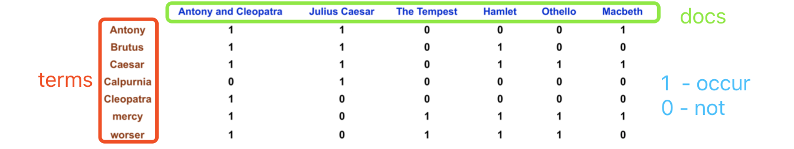
Then we can answer query: take the vectors for Brutus, Caesar and Calpurnia (complemented) -> bitwise AND. 110100 AND 110111 AND 101111 = 100100.
(speed up than traditional RDBMS) -
But some information are not captured in the matrix:
- order between the words
- how many times the word occurs in the doc
-
Sparse matrix(稀疏矩阵)
- E.g., 1 million words and n docs which contains only 1000 words. There will be only 1000 1‘s in one column, matrix is extremely sparse.
- Solutions:
- （常用）类似于表示Graph(V,E)用adjoin list，这里我们用list存docid，也就是Inverted index倒排索引
- （不常用）用Run-length encoding，doc:2-1s, 1-0s 表示 2个1，1个0
Inverted index
- For each term t, we must store a list of all documents(docId) that contain t.
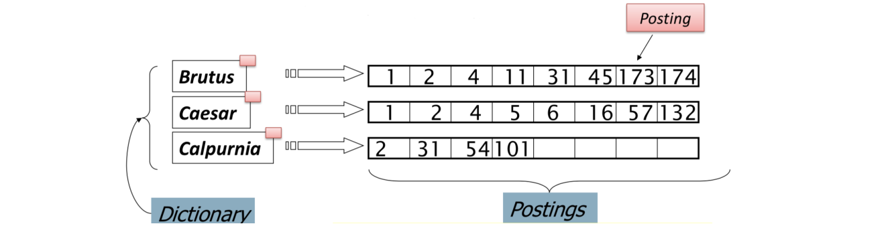
-
Inverted index construction
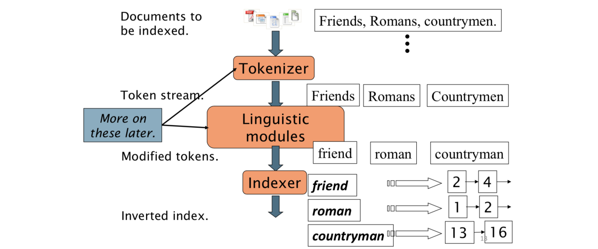 -
Indexer steps:
- Token sequence
- Sequence of (Modified token, Document ID) pairs.
通常会处理term单复数，大小写，过去式变成原形等等。但是下面example没处理。
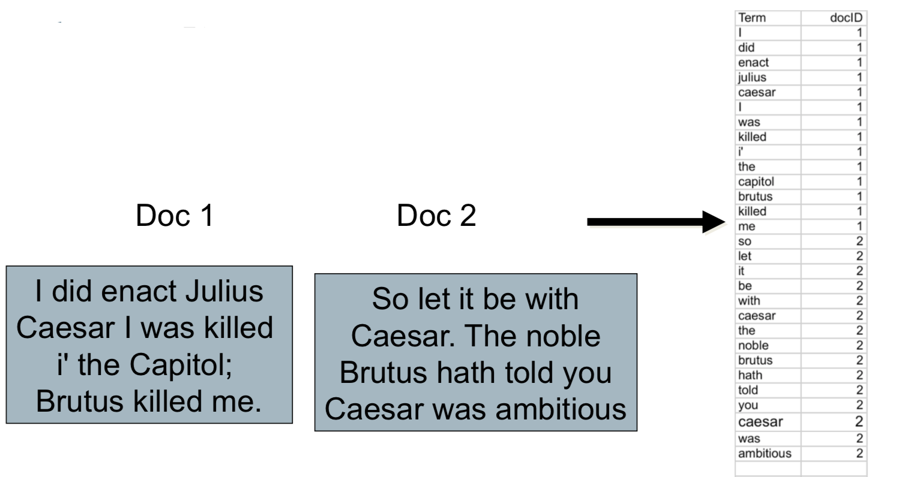
- Sort
- Sort by terms and then docID
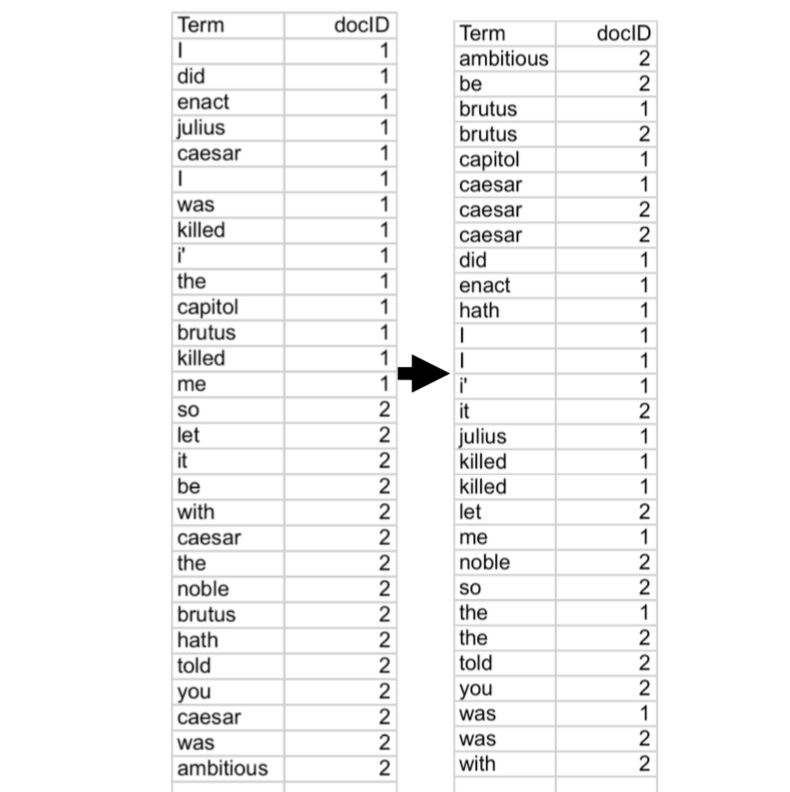
- Dictionary & Postings
- Multiple term entries in a single document are merged.
- Split into Dictionary and Postings
- Doc. frequency information is added. frequency指的是有几个文件出现了这个terms，但是一个doc中出现了几次没有记录
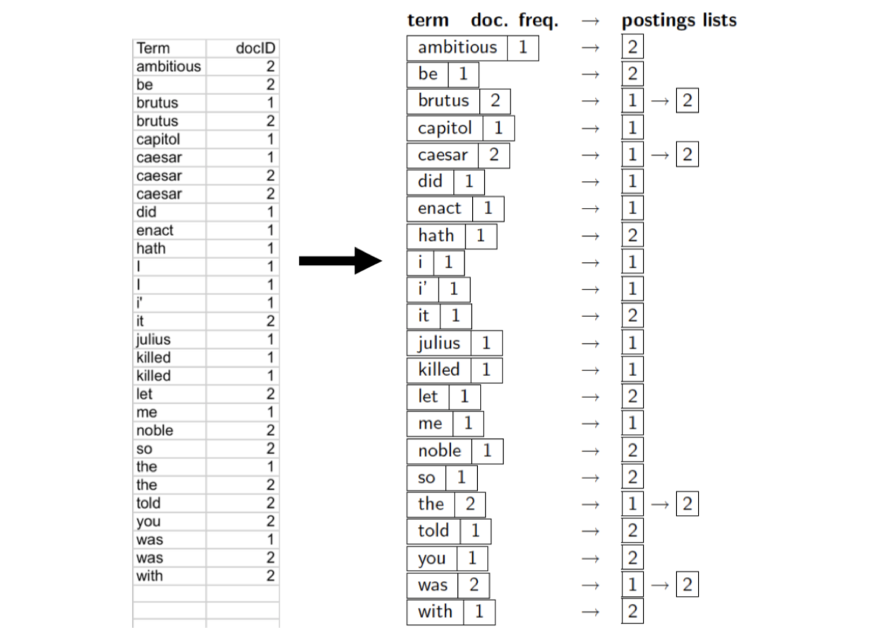
N.B.
- Hashing-based construction methods are more efficient (though harder to implement)
- Inverted index can be compressed to
-
reduce index size
-
reduces transfer time between storage and memory
-
Query processing with an inverted index
AND: 2 list intersection
Consider processing the query: Brutus AND Caesar
这里介绍3种Merge思路：
- Walk through the two postings simultaneously, in time linear in the total number of postings entries
Crucial: postings sorted by docID.
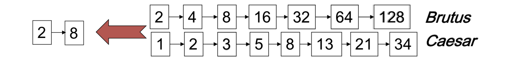
If the list lengths are n and m, the merge takes O(n+m) operations.
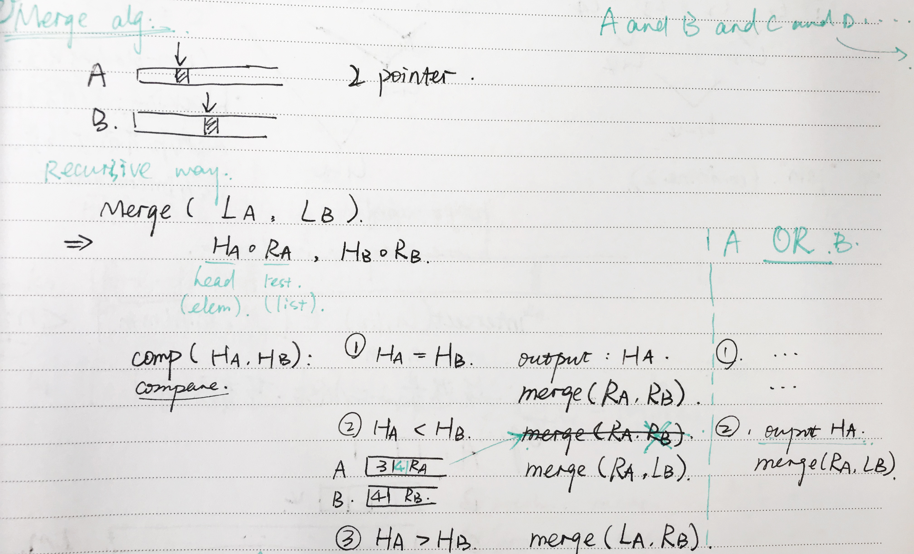
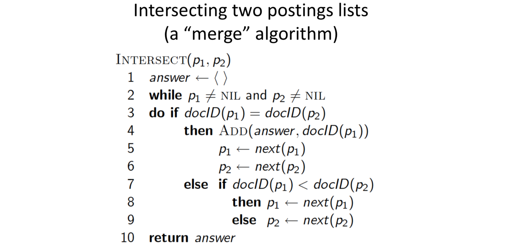
- Walk through the one list, and check if the element exists in another list
1 | foreach x ∈ LA |
重点就是if x ∈ LB的效率，我们介绍一种快速集合元素查询的方式：Bloom Filter
- Bloom Filter使用k个相互独立的哈希函数（Hash Function），它们分别将集合中的每个元素映射到{1,…,m}的范围中。对任意一个元素x，第i个哈希函数映射的位置hi(x)就会被置为1（1≤i≤k)。在判断y是否属于这个集合时，我们对y应用k次哈希函数，如果所有hi(y)的位置都是1（1≤i≤k），那么我们就认为y是集合中的元素，否则就认为y不是集合中的元素。
- if x ∈ LB => Yes
if x ∉ LB => 可能会出现 false positive的情况- Bloom Filter很常用，它是用极小的错误换取了很大的空间节省
P.S. 在COMP9313 Chapter9-Mining Data Streams中有详细介绍
If the list lengths are n and m, the merge takes O(nlogm) operations.
- Merge A and B, then sort
1 | C = A ○ B (just merge A,B into C。连接A,B) |
- Time complexity is most cost by sorting.
So it takes O((n+m)log(n+m)) n << m. which is much slower than other algorithm. - BUT Advantage: Distributed sorting (suitable for big data), because reliable for sorting is really good，it can easy apply to MapReduce/Spark.
- For big data, scalability, reliability and efficiency of the algorithm are all
very important.
每个算法有各自的优点吧，不是time complexity小的一定就好
Multiple list intersection
-
2 methods：
- Combine each 2 lists, then recursive
- Settle the dispute within the first two lists = > max algorithm
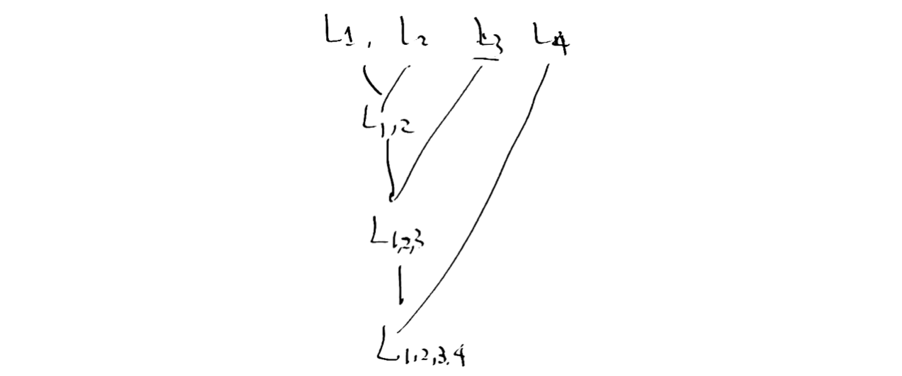
The second is better cause:
- Better locality of accesse => fewer cache misses
- Similar to SvS
因为intersect(L1, L2) ∈ [0, min(n, m)]
比如: 一个极端的例子，A长度为3，B为10，C为1M。intersection(A,B)= ∅. 甚至都不用考虑C了

Hence , we process in order of increasing freq: start with smallest set, then keep cutting further.
MAX algorithm
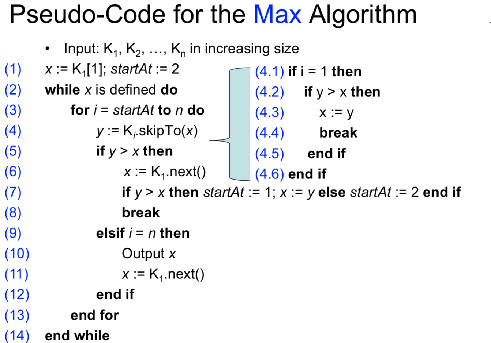
Faster postings merges
-
sorted list: We optimise the algrithom by making use of this information in the list
-
skipTo(id): To skip postings that will not figure in the search results.
- Tradeoff:
- More skips => shorter skip spans => more likely to skip. But lots of comparisons to skip pointers.
- Fewer skips => few pointer comparison, but then long skip spansa => few successful skips.
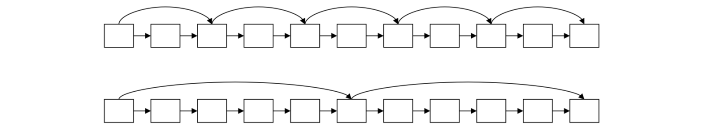
- Tradeoff:
Binary Search
- Binary search space is always halved at each step.
- Guaranteed to finish in O(log(n)) time.
Gralloping Search
also known as Double Binary Search and Exponential search
- Stage 1: Gralloping search starts at the first element and keeps doubling the upper limit of the search range until the value there is larger than the searched key.
- Stage 2: After this, we can apply a standard binary search or restart another galloping search in the last range.
- The former one guarantees an O(log(n)) runtime, the latter one is closer to O(n) runtime.
- Galloping search is efficient if we expect to find the element closer to the beginning of the array.
More about time complexity if using galloping search for stage1 and binary search for stage2:
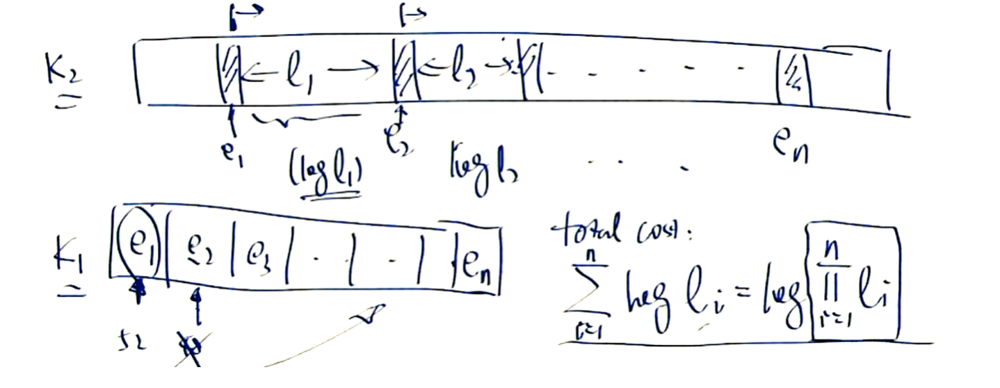
Arithmetic mean > Geometric mean
As L1<< L2, the time complexity will be small, quite robust.
Skip lists/pointers
- A skip pointer (d, p) contains a document number d and a byte (or bit) position p
- there is an inverted list posting that starts at position p, and the posting before it was for document d
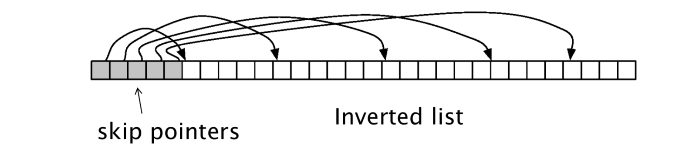
Sequential search (linear search)：
- sequentially checks each element of the list for the target value until a match is found or until all the elements have been searched.
- time complexity O(n)
-
Step 1: We perform sequential search in the skip pointers array, and then
-
Step 2: We perform sequential search in the target segment.
If there is n pointers, then we have L/n gaps(target segment).
- What is the best number of skip pointers?
- The total time complexity is O(n + L/n).
- we take the derative and make it equal to 0.
- Similar, if we perform binary search in step 1 and sequentially search in step 2:
- The total time complexity is O(logn + L/n).
- The best n = L.
Pharse Queries and positional indexs
- Phrase queries:
- Want to be able to answer queries such as “Los Angeles” – as a phrase
- For this, it no longer suffices to store only
entries
Solution 1: Biword indexes
- Index every consecutive pair of terms in the text as a phrase
- For example the text “Friends, Romans, Countrymen” would generate the biwords
- friends romans
- romans countrymen
- Each of these biwords is now a dictionary term
- Two-word phrase query-processing is now immediate.
- Issues:
- False positives, as noted before
- Index blowup due to bigger dictionary
- Infeasible for more than biwords, big even for them
- Biword indexes are not the standard solution (for all biwords) but can be part of a compound strategy.
Solution 2 : Positional indexes
-
In the postings, store, for each term the position(s) in which tokens of it appear:
<term, number of docs containing term;
doc1: position1, position2 … ;
doc2: position1, position2 … ;
etc.> -
For example:
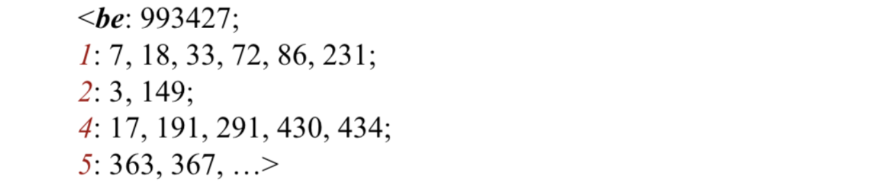
-
For phrase queries, we use a merge algorithm recursively at the document level
-
Processing a phrase query
-
Extract inverted index entries for each distinct term: to, be, or, not
-
Merge their doc:position lists to enumerate all positions with “to be or not to be”.
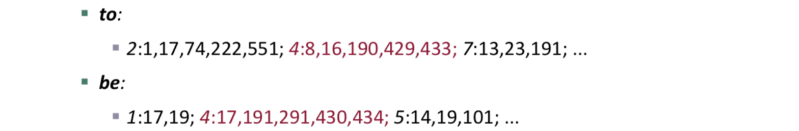
-
-
Proximity queries
- /k: within k words; /s: in the same sentence; /p: in the same paragraph
- Solution 1: We just extract position, sentenceid and paragraphid and process as usual.
- Solution 2: Extent list approach.(c.f., Chap 5.3.4 in [CMS09]).
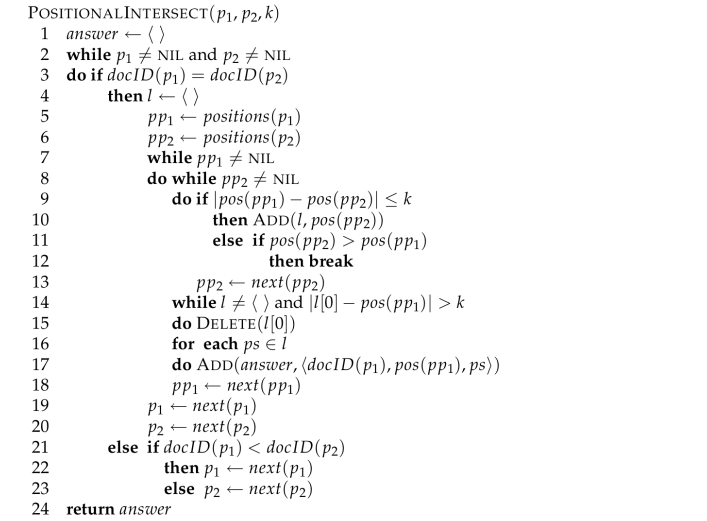